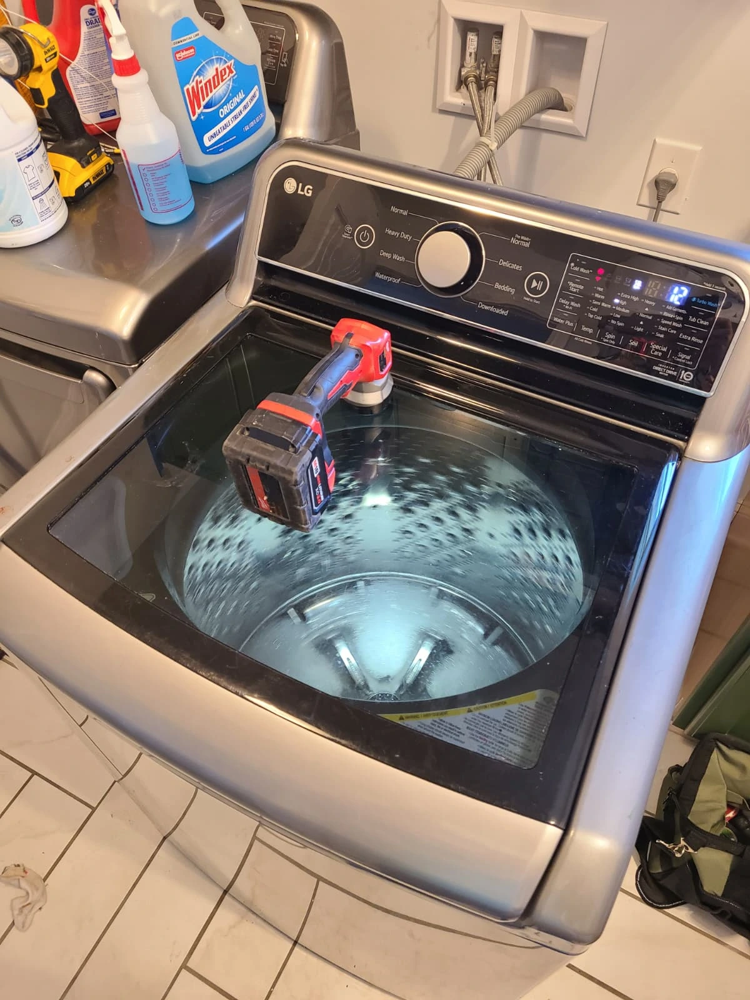
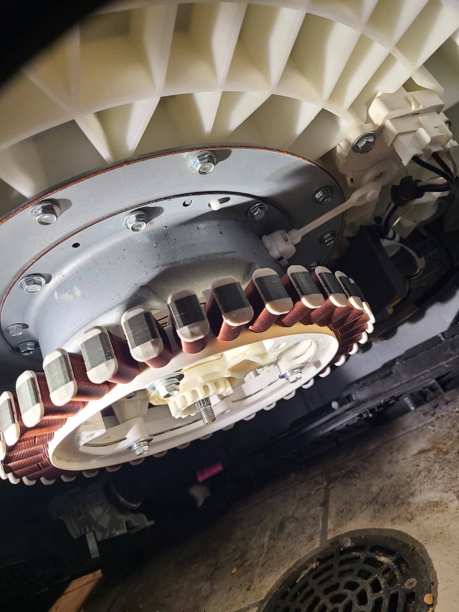
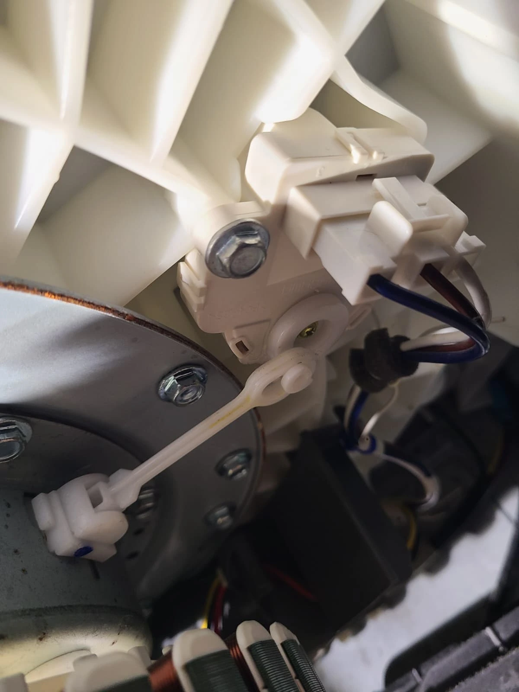
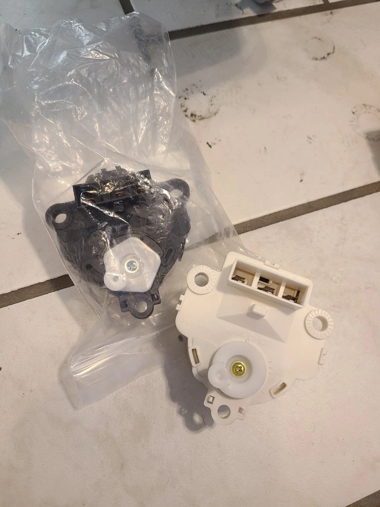
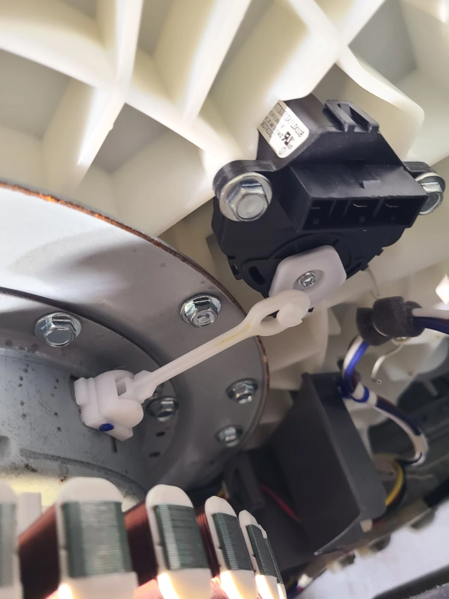
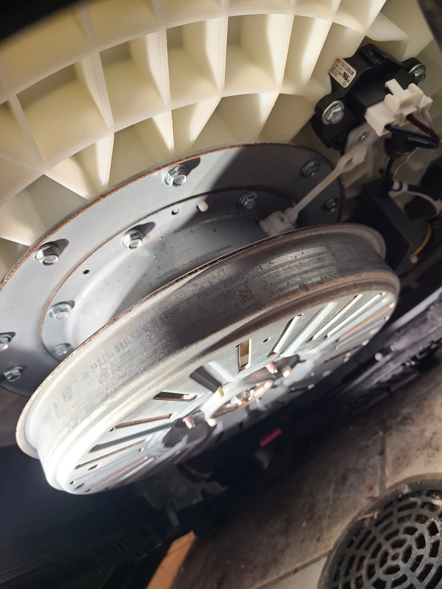

The Spin Cycle Worked, but the Wash Cycle Did Not
A homeowner in Carmel, Indiana, contacted Alex Appliance Repair about an unusual laundry problem: the LG washer could spin, but it would not perform the washing action. The customer described the agitator as not turning during the wash cycle. That difference between the two modes was the key detail in the service request.
A spinning basket can make a washer appear mechanically functional, yet spinning alone does not wash the load. In this case, diagnosis identified a failed actuator motor. We ordered the replacement and installed it, completing the repair on October 29, 2026. The photographs below show the appliance, its model identification and the components involved in the repair.

Model Confirmed: LG WT7400CV
The original appliance label identifies this washer as LG WT7400CV. The image is a crop of the model-number area from the service photograph, with the serial number outside the crop. Confirming the model matters because similar-looking LG top-load washers can use different wash systems and components.
Although homeowners often call the moving part an “agitator,” this model uses a low-profile impeller, or washplate, at the bottom of the basket. LG identifies the design as an impeller washer in its WT7400CV product specifications. Here, “not agitating” describes the missing washing action; it does not refer to a tall center-post agitator.


Why a Working Spin Cycle Does Not Rule Out a Drive Problem
The reported symptoms narrowed the question: why could the machine spin while the washplate was not doing its job during washing? Those are different operating modes. The actuator and its linkage are part of the mechanism that changes the drive arrangement between washing and spinning. A problem in that mechanism can therefore affect one mode while the other still operates.
That explanation is useful context, but the symptom alone is not enough to choose a replacement part. The diagnosis on this washer identified the actuator motor as the failed component. The underside photograph shows the exposed drive area and linkage; the highlighted diagram in the Visit Overview locates the actuator within the larger assembly.
From Diagnosis to Actuator Motor Replacement
Once the failed actuator was identified, a replacement was ordered for this repair. The original unit was removed and the replacement installed. These two photographs show the original actuator in position and the removed component beside its replacement, connecting the diagnosis to the actual work performed at the Carmel home.




The small actuator is separate from the large drive motor assembly visible underneath the tub. That distinction matters when describing the repair: this visit involved replacing the actuator motor, rather than treating the customer's complaint as proof that every part of the drive system had failed. The confirmed finding determined the repair scope.


The Replacement Actuator and Linkage
The replacement actuator was secured in its mounting position and attached to the linkage. In this close-up, the white arm connects the actuator to the shifting mechanism. The photograph records the replacement installation before the remaining reassembly was finished.
The actuator is easy to overlook because it is much smaller than the rotor and stator beneath the tub. Its connection to the shifting linkage explains why it matters to the wash cycle. Replacing the diagnosed component addressed the repair identified during this visit and allowed the washer to be reassembled.


Repair Completed in Carmel on October 29
The final underside photograph shows the drive rotor back in place and the replacement actuator connected. The repair was completed in Carmel, Indiana, on October 29, 2026. The sequence of service photos follows the work from access to the drive area through actuator replacement and reassembly.
For a homeowner arranging a similar visit, a useful description is: “The washer spins, but the washplate does not move during washing.” Add the model number and any displayed error message. These details help communicate the problem accurately, while an inspection determines whether the actuator, linkage or another component needs attention.
Questions About an LG Washer That Spins but Will Not Wash
Can the actuator be faulty if the spin cycle still works?
Yes. On this LG WT7400CV, the customer reported working spin and missing wash action, and diagnosis identified a failed actuator motor. Working spin does not establish that the washing mechanism is functioning correctly.
Does this symptom always mean the actuator needs replacement?
No. Similar symptoms can require different repairs. The actuator diagnosis in this article applies to this particular washer. A technician should inspect the machine before recommending components.
Does the LG WT7400CV have an agitator or an impeller?
It has a low-profile impeller, also called a washplate. Homeowners may still describe its washing motion as agitation, so “will not agitate” is a useful description of the symptom.
What work was performed on this washer?
The failed actuator motor was diagnosed, a replacement was ordered and installed, and the washer was reassembled. The repair took place in Carmel, Indiana.
What should I share when booking service?
Provide the model, describe whether wash and spin behave differently, and mention any error message. Avoid removing underside components or reaching beneath a powered washer to investigate the problem.
LG Washer Repair in Carmel, Indiana
If your LG washing machine spins but will not wash, Alex Appliance Repair can help diagnose the cause. Start with the symptom and model number so the service request reflects what the appliance is actually doing.
Learn about our washer repair in Carmel, LG appliance repair services and recent repair stories. We explain the diagnosis and estimate before approved repair work.
Alex Appliance Repair is an independent appliance repair service operated by Aksenov LLC. Call (463) 248-8429 to discuss your washer or book a service visit online.
Book washer repair in Carmel